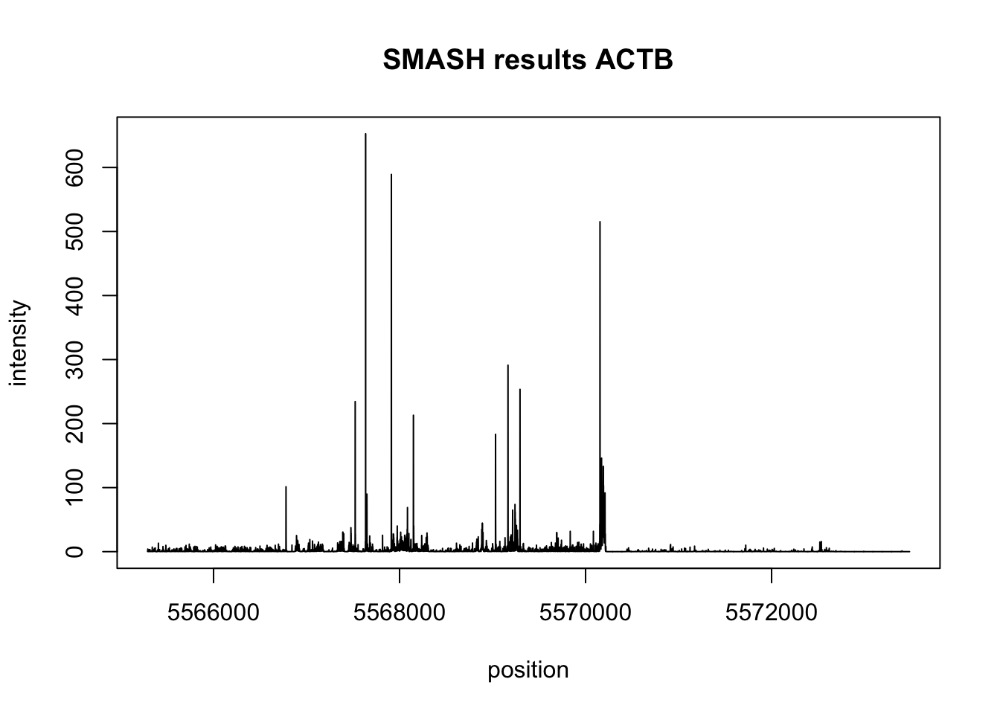
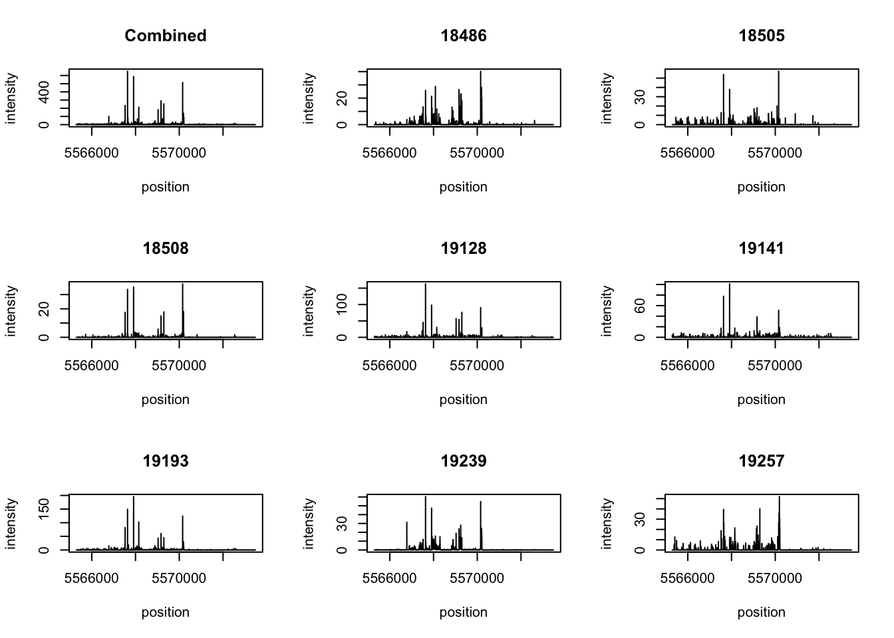

Last updated: 2018-07-19
workflowr checks: (Click a bullet for more information) ✔ R Markdown file: up-to-date
Great! Since the R Markdown file has been committed to the Git repository, you know the exact version of the code that produced these results.
✔ Environment: empty
Great job! The global environment was empty. Objects defined in the global environment can affect the analysis in your R Markdown file in unknown ways. For reproduciblity it’s best to always run the code in an empty environment.
✔ Seed:
set.seed(12345)
The command set.seed(12345) was run prior to running the code in the R Markdown file. Setting a seed ensures that any results that rely on randomness, e.g. subsampling or permutations, are reproducible.
✔ Session information: recorded
Great job! Recording the operating system, R version, and package versions is critical for reproducibility.
✔ Repository version: 0d7956a
wflow_publish or wflow_git_commit). workflowr only checks the R Markdown file, but you know if there are other scripts or data files that it depends on. Below is the status of the Git repository when the results were generated:
Ignored files:
Ignored: .DS_Store
Ignored: .RData
Ignored: .Rhistory
Ignored: .Rproj.user/
Ignored: data/.DS_Store
Untracked files:
Untracked: Ggsb_logo.r.pdf
Untracked: Rplot.pdf
Untracked: _workflowr.yml
Untracked: analysis/filter_bam.Rmd
Untracked: analysis/gencode.v19.annotation.proteincodinggene.saf
Untracked: analysis/temp
Untracked: analysis/top5_gen_wind200.bed
Untracked: data/DaPars_APA_geuvadis.txt
Untracked: data/Day7_cardiomyocytes_droNC_seq.bam
Untracked: data/Day7_cardiomyocytes_droNC_seq.bam.bai
Untracked: data/Day7_cardiomyocytes_drop_seq.bam
Untracked: data/Day7_cardiomyocytes_drop_seq.bam.bai
Untracked: data/LCL_3utr.txt
Untracked: data/LCL_3utrAB.bed
Untracked: data/LCL_3utrAB.neg.chr20.bed
Untracked: data/LCL_3utrAB_pos.chr1.bed
Untracked: data/LCL_3utrAB_pos.chr21.bed
Untracked: data/NET3-18486.gene.coverage.bed
Untracked: data/NET3-18486.gene.coverage.noSM.bed
Untracked: data/NET3-18486.gene.coverage.nosn.nosno.bed
Untracked: data/NET3-18486.gene.coverage.notopwind.bed
Untracked: data/NET3-18486.tss.coverage.bed
Untracked: data/NET3-18486_combined_Netpilot-sort.FC200.cov.bed
Untracked: data/NET3-18486_combined_Netpilot-sort.FC200.cov.no0.bed
Untracked: data/NET3-18486_combined_Netpilot-sort.exon.cov.txt
Untracked: data/NET3-18505.gene.coverage.bed
Untracked: data/NET3-18505_combined_Netpilot-sort.FC200.cov.no0.bed
Untracked: data/NET3-18508_combined_Netpilot-sort.FC200.cov.no0.bed
Untracked: data/NET3-19128_combined_Netpilot-sort.FC200.cov.no0.bed
Untracked: data/NET3-19141_combined_Netpilot-sort.FC200.cov.no0.bed
Untracked: data/NET3-19193_combined_Netpilot-sort.FC200.cov.no0.bed
Untracked: data/NET3-19239_combined_Netpilot-sort.FC200.cov.no0.bed
Untracked: data/NET3-19257_combined_Netpilot-sort.FC200.cov.no0.bed
Untracked: data/RNAseqGeuvadis_STAR_18486.coverage.bed
Untracked: data/RNAseqGeuvadis_STAR_18486.gene.coverage.bed
Untracked: data/RefSeqGenes.bed
Untracked: data/SRR1575922-sort.bam
Untracked: data/SRR1575922-sort.bam.bai
Untracked: data/SwitchGear_TSS.bed
Untracked: data/UMI_18486_dep_stat.txt
Untracked: data/UMI_18486_dep_stat_tab.txt
Untracked: data/UMI_18508_dep_stat.txt
Untracked: data/UMI_18508_nondep_stat.txt
Untracked: data/UMI_19238_dep_stat.txt
Untracked: data/UMI_Net3_18486_dedupstat.txt
Untracked: data/UMI_Net3_18486_stat.txt
Untracked: data/UMI_Net3_18505_dedupstat.txt
Untracked: data/UMI_Net3_18505_stat.txt
Untracked: data/UMI_Net3_18508_dedupstat.txt
Untracked: data/UMI_Net3_18508_stat.txt
Untracked: data/UMI_Net3_19128_dedupstat.txt
Untracked: data/UMI_Net3_19128_stat.txt
Untracked: data/UMI_Net3_19141_dedupstat.txt
Untracked: data/UMI_Net3_19141_stat.txt
Untracked: data/UMI_Net3_19193_dedupstat.txt
Untracked: data/UMI_Net3_19193_stat.txt
Untracked: data/UMI_Net3_19239_dedupstat.txt
Untracked: data/UMI_Net3_19239_stat.txt
Untracked: data/UMI_Net3_19257_dedupstat.txt
Untracked: data/UMI_Net3_19257_stat.txt
Untracked: data/UMI_mayer_stat.txt
Untracked: data/YG-SP-NET1-18486-dep-2017-10-13_S4_R1_001-sort.dedup.cov.bed
Untracked: data/YG-SP-NET3-18486_combined_Netpilot-sort.cov.AC093901.bed
Untracked: data/YG-SP-NET3-18486_combined_Netpilot-sort.cov.BTRC.bed
Untracked: data/YG-SP-NET3-18486_combined_Netpilot-sort.cov.RNU5B.bed
Untracked: data/YG-SP-NET3-18486_combined_Netpilot-sort.cov.WDR74.bed
Untracked: data/YG-SP-NET3-18486_combined_Netpilot-sort.cov.chr2.bed
Untracked: data/YG-SP-NET3-18486_combined_Netpilot-sort.cov.insig2.bed
Untracked: data/YG-SP-NET3-18486_combined_Netpilot-sort.cov.ppef2.bed
Untracked: data/YG-SP-NET3-18486_combined_Netpilot-sort.cov.rnu259p.bed
Untracked: data/YG-SP-NET3-18486_combined_Netpilot-sort.dedup.cov.insig2.bed
Untracked: data/all_RNAmetrics.picard.none.csv
Untracked: data/all_files.APA500.coverage.bed
Untracked: data/all_files_coverage.bed
Untracked: data/all_strand_genecounts_18486.txt
Untracked: data/bam_files_chr/
Untracked: data/blcl.hg38.sorted.bam
Untracked: data/blcl.hg38.sorted.bam.bai
Untracked: data/cell_growth_3.21.18.csv
Untracked: data/clip_18486_dep.txt
Untracked: data/clusters.bed
Untracked: data/clusters.hg38
Untracked: data/clusters.hg38.3utr.neg.bed
Untracked: data/clusters.hg38.3utr.pos.bed
Untracked: data/clusters.hg38.bed
Untracked: data/dedup_18486_mapqual.txt
Untracked: data/drop7_cardio_3utr.txt
Untracked: data/drop7_cardio_3utrAB.neg.chr21.bed
Untracked: data/drop7_cardio_3utrAB.pos.chr21.bed
Untracked: data/ensembl2refseq.txt
Untracked: data/eqtl_fullgene/
Untracked: data/eqtl_genes_effectsize.txt
Untracked: data/eqtl_output.cis.txt
Untracked: data/eqtl_output.txt
Untracked: data/eqtl_strand_spec/
Untracked: data/exon_cov/
Untracked: data/fc_genecov/
Untracked: data/gencode.v19.annotation.distfilteredgenes.bed
Untracked: data/gencode.v19.annotation.egqtlfilter.bed
Untracked: data/gencode.v19.annotation.eqtlfilter.bed
Untracked: data/gencov_18486.bed
Untracked: data/gene_cov_count/
Untracked: data/gene_coverage_18486_dedup_hist.txt
Untracked: data/gene_coverage_18486_hist.txt
Untracked: data/gene_coverage_18508_dep.txt
Untracked: data/gene_coverage_18508_dep_hist.txt
Untracked: data/gene_coverage_18508_nondep_hist.txt
Untracked: data/gene_coverage_19238_dep_hist.txt
Untracked: data/gene_coverage_mayer_SRR1575922_hist.txt
Untracked: data/gene_dedup_cov_count/
Untracked: data/genotypes.rs7144811.txt
Untracked: data/growth_curve_3.16.csv
Untracked: data/hES.hg38.sorted.bam
Untracked: data/hES.hg38.sorted.bam.bai
Untracked: data/hg19.GM72.CTCF
Untracked: data/hg19.ref.genes.bed
Untracked: data/insig2sec.txt
Untracked: data/mapped_18486_dep.txt
Untracked: data/mapped_18486_dep_max.txt
Untracked: data/mapped_18508_dep.txt
Untracked: data/mapped_19238_dep.txt
Untracked: data/mapped_mayer.txt
Untracked: data/mapped_qual_18486.txt
Untracked: data/mapped_qual_18505.txt
Untracked: data/mapped_qual_18508.txt
Untracked: data/mapped_qual_19128.txt
Untracked: data/mapped_qual_19141.txt
Untracked: data/mapped_qual_19193.txt
Untracked: data/mapped_qual_19239.txt
Untracked: data/mapped_qual_19257.txt
Untracked: data/matrix_expression.txt
Untracked: data/matrix_genotypes.csv
Untracked: data/matrix_genotypes.txt
Untracked: data/merged_Net1.bam
Untracked: data/merged_Net1.bam.bai
Untracked: data/meta_info_coverage.bed
Untracked: data/names_geno.txt
Untracked: data/net-3-readmap/
Untracked: data/net1_18486_dep_dedup.bed
Untracked: data/net1_18486_dep_dedup_chr.bed
Untracked: data/net4_readcounts.xlsx
Untracked: data/net_pilot_eqtl_expression.bed
Untracked: data/net_pilot_eqtl_genotypes.vcf
Untracked: data/netcomb_intronicbases.csv
Untracked: data/opp_strand_genecounts_18486.txt
Untracked: data/opp_strand_genecounts_18505.txt
Untracked: data/opp_strand_genecounts_filt_18486.txt
Untracked: data/perc_alive_3.16.csv
Untracked: data/prom_coverage/
Untracked: data/qual_18486_dep.txt
Untracked: data/qual_18508_dep.txt
Untracked: data/qual_19238_dep.txt
Untracked: data/qual_mayer.txt
Untracked: data/refseq_250up.bed
Untracked: data/run_lm_APA.txt
Untracked: data/same_strand_genecounts_18486.txt
Untracked: data/same_strand_genecounts_18505.txt
Untracked: data/same_strand_genecounts_filt_18486.txt
Untracked: data/smash_test/
Untracked: data/sort_dedup_3prime_chr2_no0.18486.txt
Untracked: data/sort_dedup_chr2_no0_18486.txt
Untracked: data/test.txt
Untracked: data/three_prime_utr.bed
Untracked: data/top5_exonlist.txt
Untracked: data/top5_exonlist_18486_fiveprime_cov.txt
Untracked: data/top5_exonlist_18486_fiveprime_cov2.txt
Untracked: data/top5_exonlist_18486_fiveprime_cov2_filter.txt
Untracked: data/top5_exonlist_18486_threeprime_cov.txt
Untracked: data/top5_exonlist_18486_threeprime_cov2.txt
Untracked: data/top5_exonlist_18486_threeprime_cov2_filter.txt
Untracked: data/top5_gen_wind200.bed
Untracked: data/top5_gen_wind200.tab.bed
Untracked: data/uniq_genes/
Untracked: data/windows_200/
Untracked: docs/temp
Untracked: docs/top5_gen_wind200.bed
Untracked: output/Rs7144811_apa_usage.pdf
Untracked: output/picard.accrossgenebodies.netpilot.csv
Unstaged changes:
Modified: analysis/APA_qtl_RNAseq.Rmd
Modified: analysis/LCL_growth.Rmd
Modified: analysis/Net_3_explore.Rmd
Modified: analysis/Reads_per_pas.Rmd
Modified: analysis/UTR_coverage.Rmd
Modified: analysis/_site.yml
Modified: analysis/about.Rmd
Modified: analysis/bin_windows.Rmd
Modified: analysis/check_bamid.Rmd
Deleted: analysis/chunks.R
Modified: analysis/conda.environment.Rmd
Modified: analysis/config.snake.setup.Rmd
Modified: analysis/create_blacklist.Rmd
Modified: analysis/data_for_ggplot.Rmd
Modified: analysis/eqtl_bystrand.Rmd
Modified: analysis/explore_umi_usage.Rmd
Modified: analysis/extend_APA_qtl.Rmd
Modified: analysis/gviz_plots.Rmd
Modified: analysis/initial.data.exploration.Rmd
Modified: analysis/license.Rmd
Modified: analysis/map_stats_from_bam.Rmd
Modified: analysis/reads_in_genes.Rmd
Modified: analysis/recreate_mayer_figs.Rmd
Modified: analysis/strand_spec.Rmd
Modified: analysis/test-analysis.Rmd
Modified: analysis/three_prime_UTR.Rmd
Modified: analysis/update_snakefile.Rmd
Modified: analysis/use_deeptools.Rmd
Modified: analysis/visualize_genomefeatures.Rmd
| File | Version | Author | Date | Message |
|---|---|---|---|---|
| Rmd | 0d7956a | Briana Mittleman | 2018-07-19 | add smash analysis |
Use SMASH to smooth regions of the Netseq data.
I want to use the first 8 lines (NET3)
18505
18508
18486
19239
19141
19193
19257
19128
The coverage files I need to make the matrix are in /project2/gilad/briana/Net-seq-pilot/data/cov.
I am going to look at the region chr7:5,565,291-5,573,483 around the actb gene.
#!/bin/bash
#SBATCH --job-name=testsmash.actb
#SBATCH --account=pi-yangili1
#SBATCH --time=24:00:00
#SBATCH --output=testsmash.actb.out
#SBATCH --error=testsmash.actb.err
#SBATCH --partition=broadwl
#SBATCH --mem=20G
#SBATCH --mail-type=END
awk '$1 == 7 && $2 >= 5565291 && $2 <= 5573483 {print}' /project2/gilad/briana/Net-seq-pilot/data/cov/YG-SP-NET3-18486_combined_Netpilot-sort.cov.bed > /project2/gilad/briana/Net-seq-pilot/data/smash.test/YG-SP-NET3-18486_combined_Netpilot-actb.bed
awk '$1 == 7 && $2 >= 5565291 && $2 <= 5573483 {print}' /project2/gilad/briana/Net-seq-pilot/data/cov/YG-SP-NET3-18505_combined_Netpilot-sort.cov.bed > /project2/gilad/briana/Net-seq-pilot/data/smash.test/YG-SP-NET3-18505_combined_Netpilot-actb.bed
awk '$1 == 7 && $2 >= 5565291 && $2 <= 5573483 {print}' /project2/gilad/briana/Net-seq-pilot/data/cov/YG-SP-NET3-18508_combined_Netpilot-sort.cov.bed > /project2/gilad/briana/Net-seq-pilot/data/smash.test/YG-SP-NET3-18508_combined_Netpilot-actb.bed
awk '$1 == 7 && $2 >= 5565291 && $2 <= 5573483 {print}' /project2/gilad/briana/Net-seq-pilot/data/cov/YG-SP-NET3-19128_combined_Netpilot-sort.cov.bed > /project2/gilad/briana/Net-seq-pilot/data/smash.test/YG-SP-NET3-19128_combined_Netpilot-sort.actb.bed
awk '$1 == 7 && $2 >= 5565291 && $2 <= 5573483 {print}' /project2/gilad/briana/Net-seq-pilot/data/cov/YG-SP-NET3-19141_combined_Netpilot-sort.cov.bed > /project2/gilad/briana/Net-seq-pilot/data/smash.test/YG-SP-NET3-19141_combined_Netpilot.actb.bed
awk '$1 == 7 && $2 >= 5565291 && $2 <= 5573483 {print}' /project2/gilad/briana/Net-seq-pilot/data/cov/YG-SP-NET3-19193_combined_Netpilot-sort.cov.bed > /project2/gilad/briana/Net-seq-pilot/data/smash.test/YG-SP-NET3-19193_combined_Netpilot.actb.bed
awk '$1 == 7 && $2 >= 5565291 && $2 <= 5573483 {print}' /project2/gilad/briana/Net-seq-pilot/data/cov/YG-SP-NET3-19239_combined_Netpilot-sort.cov.bed > /project2/gilad/briana/Net-seq-pilot/data/smash.test/YG-SP-NET3-19239_combined_Netpilot.actb.bed
awk '$1 == 7 && $2 >= 5565291 && $2 <= 5573483 {print}' /project2/gilad/briana/Net-seq-pilot/data/cov/YG-SP-NET3-19257_combined_Netpilot-sort.cov.bed > /project2/gilad/briana/Net-seq-pilot/data/smash.test/YG-SP-NET3-19257_combined_Netpilot.actb.bedLoad Packages:
library(devtools)Warning: package 'devtools' was built under R version 3.4.4library(scales)
library(smashr)
library(tidyr)
library(workflowr)Loading required package: rmarkdownThis is workflowr version 1.0.1
Run ?workflowr for help getting startedlibrary(dplyr)Warning: package 'dplyr' was built under R version 3.4.4
Attaching package: 'dplyr'The following objects are masked from 'package:stats':
filter, lagThe following objects are masked from 'package:base':
intersect, setdiff, setequal, unionactb_18486=read.table("../data/smash_test/YG-SP-NET3-18486_combined_Netpilot-actb.bed", col.names=c("chr", "base", "net18486"))
actb_18505=read.table("../data/smash_test/YG-SP-NET3-18505_combined_Netpilot-actb.bed", col.names=c("chr", "base", "net18505"))
actb_18508=read.table("../data/smash_test/YG-SP-NET3-18508_combined_Netpilot-actb.bed", col.names=c("chr", "base", "net18508"))
actb_19128=read.table("../data/smash_test/YG-SP-NET3-19128_combined_Netpilot.actb.bed", col.names=c("chr", "base", "net19128"))
actb_19141=read.table("../data/smash_test/YG-SP-NET3-19141_combined_Netpilot.actb.bed", col.names=c("chr", "base", "net19141"))
actb_19193=read.table("../data/smash_test/YG-SP-NET3-19193_combined_Netpilot.actb.bed", col.names=c("chr", "base", "net19193"))
actb_19239=read.table("../data/smash_test/YG-SP-NET3-19239_combined_Netpilot.actb.bed", col.names=c("chr", "base", "net19239"))
actb_19257=read.table("../data/smash_test/YG-SP-NET3-19257_combined_Netpilot.actb.bed", col.names=c("chr", "base", "net19257"))Make matrix
actb_matrix=cbind(actb_18486$net18486, actb_18505$net18505,actb_18508$net18508, actb_19128$net19128, actb_19141$net19141,actb_19193$net19193, actb_19239$net19239, actb_19257$net19257) %>%twrite the matrix out:
#write.table(actb_matrix, "../data/smash_test/actb_countmatrix.txt", quote = F, row.names = F, col.names = F)Run smash:
actb_res = smash.poiss(actb_matrix[1,]+actb_matrix[2,]+ actb_matrix[3,]+ actb_matrix[4,]+actb_matrix[5,]+actb_matrix[6,]+actb_matrix[7,]+actb_matrix[8,], post.var=TRUE)Due to absence of package REBayes, switching to EM algorithm
Due to absence of package REBayes, switching to EM algorithm
Due to absence of package REBayes, switching to EM algorithm
Due to absence of package REBayes, switching to EM algorithm
Due to absence of package REBayes, switching to EM algorithm
Due to absence of package REBayes, switching to EM algorithm
Due to absence of package REBayes, switching to EM algorithm
Due to absence of package REBayes, switching to EM algorithm
Due to absence of package REBayes, switching to EM algorithm
Due to absence of package REBayes, switching to EM algorithm
Due to absence of package REBayes, switching to EM algorithm
Due to absence of package REBayes, switching to EM algorithm
Due to absence of package REBayes, switching to EM algorithm
Due to absence of package REBayes, switching to EM algorithm
Due to absence of package REBayes, switching to EM algorithmregion=5565291:5573483
plot(region,actb_res$est,type='l',xlab="position",ylab="intensity", main="SMASH results ACTB")
Next I want to run it seperatly for all 8 individuals and plot them together to see if the peaks line up.
actb_res1 = smash.poiss(actb_matrix[1,], post.var=TRUE)Due to absence of package REBayes, switching to EM algorithm
Due to absence of package REBayes, switching to EM algorithm
Due to absence of package REBayes, switching to EM algorithm
Due to absence of package REBayes, switching to EM algorithm
Due to absence of package REBayes, switching to EM algorithm
Due to absence of package REBayes, switching to EM algorithm
Due to absence of package REBayes, switching to EM algorithm
Due to absence of package REBayes, switching to EM algorithm
Due to absence of package REBayes, switching to EM algorithm
Due to absence of package REBayes, switching to EM algorithm
Due to absence of package REBayes, switching to EM algorithm
Due to absence of package REBayes, switching to EM algorithm
Due to absence of package REBayes, switching to EM algorithm
Due to absence of package REBayes, switching to EM algorithm
Due to absence of package REBayes, switching to EM algorithmactb_res2 = smash.poiss(actb_matrix[2,], post.var=TRUE)Due to absence of package REBayes, switching to EM algorithm
Due to absence of package REBayes, switching to EM algorithm
Due to absence of package REBayes, switching to EM algorithm
Due to absence of package REBayes, switching to EM algorithm
Due to absence of package REBayes, switching to EM algorithm
Due to absence of package REBayes, switching to EM algorithm
Due to absence of package REBayes, switching to EM algorithm
Due to absence of package REBayes, switching to EM algorithm
Due to absence of package REBayes, switching to EM algorithm
Due to absence of package REBayes, switching to EM algorithm
Due to absence of package REBayes, switching to EM algorithm
Due to absence of package REBayes, switching to EM algorithm
Due to absence of package REBayes, switching to EM algorithm
Due to absence of package REBayes, switching to EM algorithm
Due to absence of package REBayes, switching to EM algorithmactb_res3 = smash.poiss(actb_matrix[3,], post.var=TRUE)Due to absence of package REBayes, switching to EM algorithm
Due to absence of package REBayes, switching to EM algorithm
Due to absence of package REBayes, switching to EM algorithm
Due to absence of package REBayes, switching to EM algorithm
Due to absence of package REBayes, switching to EM algorithm
Due to absence of package REBayes, switching to EM algorithm
Due to absence of package REBayes, switching to EM algorithm
Due to absence of package REBayes, switching to EM algorithm
Due to absence of package REBayes, switching to EM algorithm
Due to absence of package REBayes, switching to EM algorithm
Due to absence of package REBayes, switching to EM algorithm
Due to absence of package REBayes, switching to EM algorithm
Due to absence of package REBayes, switching to EM algorithm
Due to absence of package REBayes, switching to EM algorithm
Due to absence of package REBayes, switching to EM algorithmactb_res4 = smash.poiss(actb_matrix[4,], post.var=TRUE)Due to absence of package REBayes, switching to EM algorithm
Due to absence of package REBayes, switching to EM algorithm
Due to absence of package REBayes, switching to EM algorithm
Due to absence of package REBayes, switching to EM algorithm
Due to absence of package REBayes, switching to EM algorithm
Due to absence of package REBayes, switching to EM algorithm
Due to absence of package REBayes, switching to EM algorithm
Due to absence of package REBayes, switching to EM algorithm
Due to absence of package REBayes, switching to EM algorithm
Due to absence of package REBayes, switching to EM algorithm
Due to absence of package REBayes, switching to EM algorithm
Due to absence of package REBayes, switching to EM algorithm
Due to absence of package REBayes, switching to EM algorithm
Due to absence of package REBayes, switching to EM algorithm
Due to absence of package REBayes, switching to EM algorithmactb_res5 = smash.poiss(actb_matrix[5,], post.var=TRUE)Due to absence of package REBayes, switching to EM algorithm
Due to absence of package REBayes, switching to EM algorithm
Due to absence of package REBayes, switching to EM algorithm
Due to absence of package REBayes, switching to EM algorithm
Due to absence of package REBayes, switching to EM algorithm
Due to absence of package REBayes, switching to EM algorithm
Due to absence of package REBayes, switching to EM algorithm
Due to absence of package REBayes, switching to EM algorithm
Due to absence of package REBayes, switching to EM algorithm
Due to absence of package REBayes, switching to EM algorithm
Due to absence of package REBayes, switching to EM algorithm
Due to absence of package REBayes, switching to EM algorithm
Due to absence of package REBayes, switching to EM algorithm
Due to absence of package REBayes, switching to EM algorithm
Due to absence of package REBayes, switching to EM algorithmactb_res6 = smash.poiss(actb_matrix[6,], post.var=TRUE)Due to absence of package REBayes, switching to EM algorithm
Due to absence of package REBayes, switching to EM algorithm
Due to absence of package REBayes, switching to EM algorithm
Due to absence of package REBayes, switching to EM algorithm
Due to absence of package REBayes, switching to EM algorithm
Due to absence of package REBayes, switching to EM algorithm
Due to absence of package REBayes, switching to EM algorithm
Due to absence of package REBayes, switching to EM algorithm
Due to absence of package REBayes, switching to EM algorithm
Due to absence of package REBayes, switching to EM algorithm
Due to absence of package REBayes, switching to EM algorithm
Due to absence of package REBayes, switching to EM algorithm
Due to absence of package REBayes, switching to EM algorithm
Due to absence of package REBayes, switching to EM algorithm
Due to absence of package REBayes, switching to EM algorithmactb_res7 = smash.poiss(actb_matrix[7,], post.var=TRUE)Due to absence of package REBayes, switching to EM algorithm
Due to absence of package REBayes, switching to EM algorithm
Due to absence of package REBayes, switching to EM algorithm
Due to absence of package REBayes, switching to EM algorithm
Due to absence of package REBayes, switching to EM algorithm
Due to absence of package REBayes, switching to EM algorithm
Due to absence of package REBayes, switching to EM algorithm
Due to absence of package REBayes, switching to EM algorithm
Due to absence of package REBayes, switching to EM algorithm
Due to absence of package REBayes, switching to EM algorithm
Due to absence of package REBayes, switching to EM algorithm
Due to absence of package REBayes, switching to EM algorithm
Due to absence of package REBayes, switching to EM algorithm
Due to absence of package REBayes, switching to EM algorithm
Due to absence of package REBayes, switching to EM algorithmactb_res8 = smash.poiss(actb_matrix[8,], post.var=TRUE)Due to absence of package REBayes, switching to EM algorithm
Due to absence of package REBayes, switching to EM algorithm
Due to absence of package REBayes, switching to EM algorithm
Due to absence of package REBayes, switching to EM algorithm
Due to absence of package REBayes, switching to EM algorithm
Due to absence of package REBayes, switching to EM algorithm
Due to absence of package REBayes, switching to EM algorithm
Due to absence of package REBayes, switching to EM algorithm
Due to absence of package REBayes, switching to EM algorithm
Due to absence of package REBayes, switching to EM algorithm
Due to absence of package REBayes, switching to EM algorithm
Due to absence of package REBayes, switching to EM algorithm
Due to absence of package REBayes, switching to EM algorithm
Due to absence of package REBayes, switching to EM algorithm
Due to absence of package REBayes, switching to EM algorithmMake results matrix:
res_matrix=rbind(actb_res$est,actb_res1$est,actb_res2$est,actb_res3$est,actb_res4$est,actb_res5$est,actb_res6$est,actb_res7$est,actb_res8$est)
#write.table(res_matrix, "../data/smash_test/actb_smash_res.txt", quote = F, col.names = F, row.names = F, sep="\t")par(mfrow=c(3,3))
plot(region,actb_res$est,type='l',xlab="position",ylab="intensity", main="Combined")
plot(region,actb_res1$est,type='l',xlab="position",ylab="intensity", main="18486")
plot(region,actb_res2$est,type='l',xlab="position",ylab="intensity",main="18505")
plot(region,actb_res3$est,type='l',xlab="position",ylab="intensity",main="18508")
plot(region,actb_res4$est,type='l',xlab="position",ylab="intensity",main="19128")
plot(region,actb_res5$est,type='l',xlab="position",ylab="intensity",main="19141")
plot(region,actb_res6$est,type='l',xlab="position",ylab="intensity",main="19193")
plot(region,actb_res7$est,type='l',xlab="position",ylab="intensity",main="19239")
plot(region,actb_res8$est,type='l',xlab="position",ylab="intensity",main="19257")
I also am going to run it on the Mayer hek data.
#!/bin/bash
#SBATCH --job-name=testsmash.actb
#SBATCH --account=pi-yangili1
#SBATCH --time=24:00:00
#SBATCH --output=testsmash.actb.out
#SBATCH --error=testsmash.actb.err
#SBATCH --partition=broadwl
#SBATCH --mem=20G
#SBATCH --mail-type=END
awk '$1 == 7 && $2 >= 5565291 && $2 <= 5573483 {print}' /project2/gilad/briana/mayer.data/mayer_hek/data/cov/mayer_hek-sort.dedup.cov.bed > /project2/gilad/briana/mayer.data/mayer_hek/data/mayer_hek-dedup-smashactb.bedThis is not the correct coverage file to run this on. I need to make a genome coverage file of the data then I can run this.
Second gene to look at COMT chr22:19,928,209-19,960,444
#!/bin/bash
#SBATCH --job-name=testsmash.comt
#SBATCH --account=pi-yangili1
#SBATCH --time=24:00:00
#SBATCH --output=testsmash.comt.out
#SBATCH --error=testsmash.comt.err
#SBATCH --partition=broadwl
#SBATCH --mem=20G
#SBATCH --mail-type=END
awk '$1 == 22 && $2 >= 19928209 && $2 <= 19960444 {print}' /project2/gilad/briana/Net-seq-pilot/data/cov/YG-SP-NET3-18486_combined_Netpilot-sort.cov.bed > /project2/gilad/briana/Net-seq-pilot/data/smash.test/YG-SP-NET3-18486_combined_Netpilot-comt.bed
awk '$1 == 22 && $2 >= 19928209 && $2 <= 19960444 {print}' /project2/gilad/briana/Net-seq-pilot/data/cov/YG-SP-NET3-18505_combined_Netpilot-sort.cov.bed > /project2/gilad/briana/Net-seq-pilot/data/smash.test/YG-SP-NET3-18505_combined_Netpilot-comt.bed
awk '$1 == 22 && $2 >= 19928209 && $2 <= 19960444 {print}' /project2/gilad/briana/Net-seq-pilot/data/cov/YG-SP-NET3-18508_combined_Netpilot-sort.cov.bed > /project2/gilad/briana/Net-seq-pilot/data/smash.test/YG-SP-NET3-18508_combined_Netpilot-comt.bed
awk '$1 == 22 && $2 >= 19928209 && $2 <= 19960444 {print}' /project2/gilad/briana/Net-seq-pilot/data/cov/YG-SP-NET3-19128_combined_Netpilot-sort.cov.bed > /project2/gilad/briana/Net-seq-pilot/data/smash.test/YG-SP-NET3-19128_combined_Netpilot-sort.comt.bed
awk '$1 == 22 && $2 >= 19928209 && $2 <= 19960444 {print}' /project2/gilad/briana/Net-seq-pilot/data/cov/YG-SP-NET3-19141_combined_Netpilot-sort.cov.bed > /project2/gilad/briana/Net-seq-pilot/data/smash.test/YG-SP-NET3-19141_combined_Netpilot.comt.bed
awk '$1 == 22 && $2 >= 19928209 && $2 <= 19960444 {print}' /project2/gilad/briana/Net-seq-pilot/data/cov/YG-SP-NET3-19193_combined_Netpilot-sort.cov.bed > /project2/gilad/briana/Net-seq-pilot/data/smash.test/YG-SP-NET3-19193_combined_Netpilot.comt.bed
awk '$1 == 22 && $2 >= 19928209 && $2 <= 19960444 {print}' /project2/gilad/briana/Net-seq-pilot/data/cov/YG-SP-NET3-19239_combined_Netpilot-sort.cov.bed > /project2/gilad/briana/Net-seq-pilot/data/smash.test/YG-SP-NET3-19239_combined_Netpilot.comt.bed
awk '$1 == 22 && $2 >= 19928209 && $2 <= 19960444 {print}' /project2/gilad/briana/Net-seq-pilot/data/cov/YG-SP-NET3-19257_combined_Netpilot-sort.cov.bed > /project2/gilad/briana/Net-seq-pilot/data/smash.test/YG-SP-NET3-19257_combined_Netpilot.comt.bed
sessionInfo()R version 3.4.2 (2017-09-28)
Platform: x86_64-apple-darwin15.6.0 (64-bit)
Running under: macOS Sierra 10.12.6
Matrix products: default
BLAS: /Library/Frameworks/R.framework/Versions/3.4/Resources/lib/libRblas.0.dylib
LAPACK: /Library/Frameworks/R.framework/Versions/3.4/Resources/lib/libRlapack.dylib
locale:
[1] en_US.UTF-8/en_US.UTF-8/en_US.UTF-8/C/en_US.UTF-8/en_US.UTF-8
attached base packages:
[1] stats graphics grDevices utils datasets methods base
other attached packages:
[1] dplyr_0.7.5 workflowr_1.0.1 rmarkdown_1.8.5 tidyr_0.7.2
[5] smashr_1.2-0 scales_0.5.0 devtools_1.13.6
loaded via a namespace (and not attached):
[1] Rcpp_0.12.17 bindr_0.1.1 pillar_1.1.0
[4] compiler_3.4.2 git2r_0.21.0 plyr_1.8.4
[7] R.methodsS3_1.7.1 R.utils_2.6.0 bitops_1.0-6
[10] iterators_1.0.10 tools_3.4.2 digest_0.6.15
[13] tibble_1.4.2 evaluate_0.10.1 memoise_1.1.0
[16] lattice_0.20-35 pkgconfig_2.0.1 rlang_0.2.1
[19] Matrix_1.2-12 foreach_1.4.4 yaml_2.1.19
[22] parallel_3.4.2 bindrcpp_0.2.2 withr_2.1.1
[25] stringr_1.3.1 knitr_1.18 caTools_1.17.1
[28] tidyselect_0.2.4 rprojroot_1.3-2 grid_3.4.2
[31] glue_1.2.0 data.table_1.11.4 R6_2.2.2
[34] purrr_0.2.5 ashr_2.2-7 magrittr_1.5
[37] whisker_0.3-2 backports_1.1.2 codetools_0.2-15
[40] htmltools_0.3.6 MASS_7.3-48 assertthat_0.2.0
[43] colorspace_1.3-2 wavethresh_4.6.8 stringi_1.2.2
[46] munsell_0.4.3 doParallel_1.0.11 pscl_1.5.2
[49] truncnorm_1.0-8 SQUAREM_2017.10-1 R.oo_1.22.0
This reproducible R Markdown analysis was created with workflowr 1.0.1